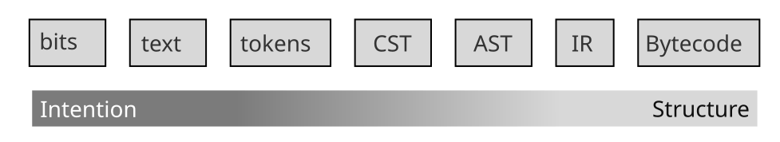
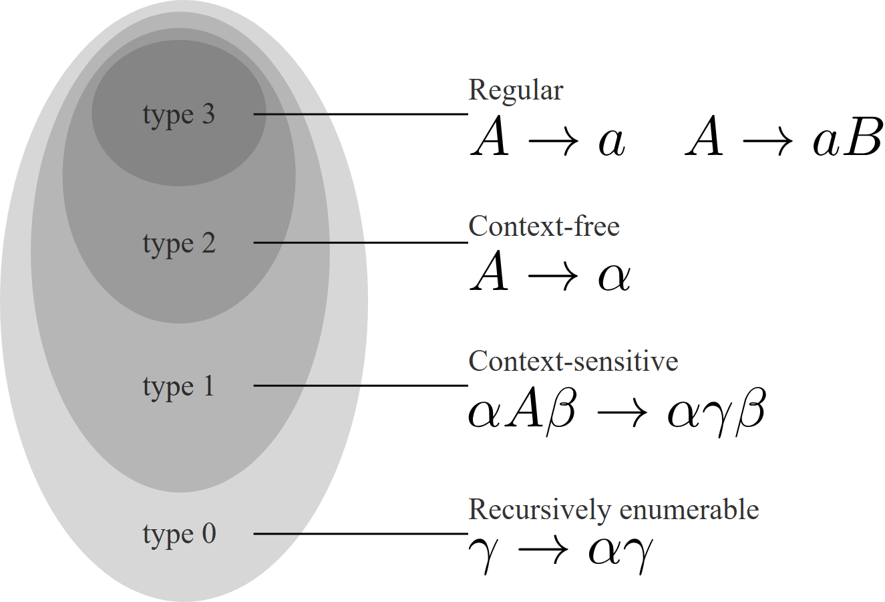
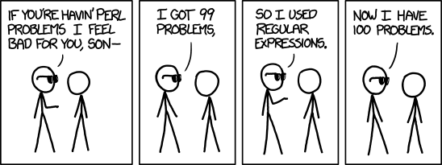
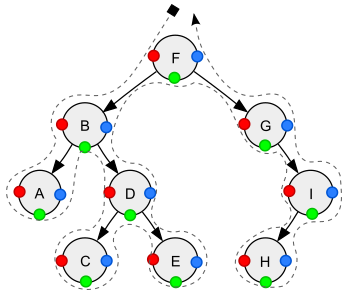

Syntactic Analysis
A poor man's analysis: judging a program by its shape instead of its meaning. Which levels of syntax there are, what formal language theory says we can and cannot match, and how regular expressions, parsers, tree queries, folds and traversals become real analyses.
What syntactic analysis is
What is syntactic analysis?
Looking at the shape of the code, not at what it does
Imagine grading essays without reading them: you check the layout, count the paragraphs and search for forbidden words. You are fast, and you can point at the exact line that bothers you, but you cannot tell whether the argument is true.
A syntactic analysis does the same with programs. It looks at the shape of the code (the text, the words, the tree the parser builds) and never runs it or reasons about what it computes.
- A syntactic analysis inspects the structure of the program: its characters, tokens or syntax tree. A semantic analysis reasons about its meaning, the set of all traces (see syntactic vs semantic).
- For a syntactic analysis
2 + 1and1 + 2are different programs, although they mean the same. Conversely, two methods can contain the same pattern and behave completely differently:
Both contain astatic int a(int n) { return 1 / n; } // divides by zero when n == 0 static int b(int n) { return 1 / (n * n + 1); } // never divides by zero/. Only a semantic argument tells them apart (forb: a square is never one less than a multiple of 4, so even with 32-bit overflow $n \cdot n + 1 \neq 0$). - Syntax is great for capturing the developer's intention (style, suspicious constructions, misuse of an API) and poor at logical bugs that depend on which values flow where at run time.
- Most static analysers in the wild, the linters (ESLint, Pylint, SpotBugs, Checkstyle), are syntactic pattern matchers. Two reasons: they are easier to develop and maintain, and they give better feedback, because a match can highlight the exact piece of source code.
- The regex analysis of week 1 was syntactic: "the method contains
/, so it may divide by zero".
Definition 2.1 Syntactic equality and semantic equivalence
Two programs are syntactically equal at level $\ell$ when their representations at that level are identical, and semantically equivalent when they have the same meaning:
$$p =_\ell q \iff \mathit{rep}_\ell(p) = \mathit{rep}_\ell(q) \qquad\qquad p \approx q \iff \Sem(p) = \Sem(q)$$"p and q look the same at level ℓ" versus "p and q have exactly the same traces". The levels $\ell$ (text, tokens, tree, ...) are the subject of the next topic; $\Sem$ is the maximal trace semantics.
Definition 2.2 Semantic property
A set of programs $P \subseteq L$ is a semantic property if it cannot tell equivalent programs apart:
$$\forall p, q \in L.\; p \approx q \implies (p \in P \iff q \in P)$$"whenever two programs mean the same, either both have the property or neither has it." Termination and "may divide by zero" are semantic properties.
Definition 2.3 Syntactic analysis
An analysis $A : L \to \mathit{Facts}$ is syntactic if it only looks at a representation of the program, that is, it factors as $A = f \circ \mathit{rep}_\ell$ for some function $f$.
"first turn the program into text, tokens or a tree, then compute the answer from that alone; never run it."
Proposition 2.1 "Contains a division" is decidable but not semantic
$P_{/} = \{ p \mid p \text{ contains the token } / \}$ is decidable, but it is not a semantic property.
Proof
Decidable: scan the tokens of $p$ once. Not semantic: return x / 1; and return x; are semantically equivalent, yet only the first is in $P_{/}$. ∎
By Rice's theorem every non-trivial semantic property is undecidable, while patterns over syntax usually are decidable. A syntactic analysis therefore replaces an undecidable semantic question by a decidable syntactic one and hopes the two mostly agree.
The levels of syntax
From raw bits to bytecode, trading intention for structure
Think of a handwritten letter. At the lowest level it is ink dots; then letters; then words; then sentences with grammar; finally a short summary of what it says. Every step up throws away details (the handwriting, the spacing) and keeps more of the structure.
A program has the same ladder. You can analyse it at any rung, and choosing the right rung is half the work.
- Bits: the bytes in the file. Only here can you see the encoding (UTF-8, Latin-1, a byte order mark).
- Text: characters, including white-space, comments and indentation.
- Tokens: the lexer groups characters into words of the language.
1232and232both become an integer token, so they look the same to the parser. White-space and comments are gone. - CST (concrete syntax tree): the parser arranges all tokens into a tree.
10 + (5 + 3)becomes(paren (+ 10 (paren (+ 5 3)))), and precedence is decided:10 + 3 * 5means10 + (3 * 5), not(10 + 3) * 5. - AST (abstract syntax tree): drops what does not matter for the meaning.
(( 10 ))and( 10 )are both stored as10. - IR (intermediate representation, e.g. LLVM IR, ClangIR, GCC's RTL): the compiler has resolved names (every variable fully qualified) and optimised a little:
x + 2 + 4may becomemypackage.Class.x + 6. - Bytecode: what the virtual machine runs. The style of the original source is gone; only the functionality is left.
- Going right, analyses get easier and more robust (no formatting variants to worry about), but you lose the context and intention of the developer.

Definition 2.4 The syntax pipeline
The front end of a compiler is a chain of (partial) functions, each producing the next representation:
$$\mathit{Bits} \xrightarrow{\ \mathit{decode}\ } \Sigma^* \xrightarrow{\ \mathit{lex}\ } \mathit{Tok}^* \xrightarrow{\ \mathit{parse}\ } \mathit{CST} \xrightarrow{\ \mathit{abstract}\ } \mathit{AST} \xrightarrow{\ \mathit{lower}\ } \mathit{IR} \xrightarrow{\ \mathit{compile}\ } \mathit{BC}$$and $\mathit{rep}_\ell$ is the composition up to level $\ell$, e.g. $\mathit{rep}_{\mathit{AST}} = \mathit{abstract} \circ \mathit{parse} \circ \mathit{lex} \circ \mathit{decode}$. A token is a pair $(\mathit{kind}, \mathit{lexeme})$ such as $(\mathtt{INT}, \texttt{"1232"})$.
"each stage reads the output of the previous one; a level-ℓ analysis sees only what survived up to ℓ." The functions are partial because ill-formed input (an unclosed parenthesis) has no CST.
Proposition 2.2 Information only gets lost
If $f(p) = f(q)$, then every analysis of the form $A' = A \circ f$ gives the same answer on $p$ and $q$.
Proof
$A'(p) = A(f(p)) = A(f(q)) = A'(q)$. ∎
"once two programs look the same at some level, nothing computed from that level can distinguish them." Since $\mathit{abstract}$ maps (( 10 )) and ( 10 ) to the same AST, no AST analysis can warn about redundant parentheses.
x + 2 + 4 parses as (x + 2) + 4, which contains no constant sub-expression. Folding it into x + 6 needs re-association: $(x + 2) + 4 = x + (2 + 4)$. That is valid for Java int, because 32-bit wrap-around addition is arithmetic modulo $2^{32}$ and therefore associative. It is not valid for double: (x + 1e16) - 1e16 is not always x.An analysis at every level
Each question has a best zoom level
A spelling mistake is visible in the letters, a missing comma in the sentence structure, a copied paragraph only in the meaning. Pick the level where the thing you look for is still visible and nothing else is in the way.
Which information is best retrieved at which level? One answer per level, with the reason it belongs there:
| Level | Example analysis | Why exactly here |
|---|---|---|
| bits | the encoding of the file | after decoding the bytes are gone |
| text | number of characters, long lines, unknown tokens | white-space disappears in the lexer |
| tokens | number of tokens (a size metric), magic numbers | no tree needed, robust to formatting |
| CST | syntax confusions like a && b || c | parentheses still present |
| AST | dangerous constructions: query("SELECT FROM db WHERE name=" + user_input) | the shape "string concatenated into a query call" is clean |
| IR | use of deprecated functions | names are fully resolved, imports and aliases cannot hide them |
| bytecode | unoptimised code, what really runs | everything the compiler added or removed is visible |
Example: AND and OR confusion. In Java && binds tighter than ||, so a && b || c means (a && b) || c. Many developers are unsure about this, so a linter can ask them to write the parentheses. It must run on the CST: there the two versions differ (one has a parenthesis node), while their ASTs are identical.
Definition 2.5 The mixed-operator lint
For a CST $t$, write $\mathit{label}(n)$ for the operator of node $n$ and $c \lhd n$ for "$c$ is a child of $n$". The lint warns when
$$\mathit{warn}(t) \iff \exists n, c \in t.\; c \lhd n \;\land\; \mathit{label}(n) = \texttt{||} \;\land\; \mathit{label}(c) = \texttt{\&\&}$$"some || node has an && node as a direct child." With explicit parentheses the child is a parenthesis node, so the rule does not fire. (The other mix, || directly under &&, cannot occur without parentheses because || binds looser.)
Proposition 2.3 The lint is impossible on the AST
$\mathit{abstract}(\mathit{parse}(\texttt{a \&\& b || c})) = \mathit{abstract}(\mathit{parse}(\texttt{(a \&\& b) || c}))$, so by Proposition 2.2 no AST-level analysis can warn on exactly the first one.
The goal of syntactic analysis
Give up soundness, keep the developers' trust
A smoke alarm that beeps every time you make toast gets its battery removed, and then it catches no fires at all. A tool that complains about correct code is ignored, so it is better to stay quiet unless you are fairly sure.
- Recall the program-based view: an analysis accepts or rejects programs. Sound means it only accepts good programs; complete means it accepts all good programs (it never rejects a good one).
- Syntax does not determine meaning (topic 01). To be sound, a syntactic analysis for "no division by zero" would have to reject every program in which a
/could possibly be harmful, i.e. nearly every program with a division. That is useless noise. - So syntactic analyses usually aim for the other side, completeness: do not reject good programs, i.e. produce few false warnings, and accept that some bugs slip through.
- This matches what developers want. Christakis and Bird (2016) surveyed developers at Microsoft:
"Program analysis design should aim for a false-positive rate no higher than 15 to 20%." and "When forced to choose between more bugs or fewer false positives, [developers] typically choose the latter." (Christakis and Bird)
Definition 2.6 Sound and complete over programs
Let $\mathit{Good} \subseteq L$ be the programs without the bug and $\mathit{Acc} \subseteq L$ the programs the analysis accepts (no warning). Then
$$\text{sound} \iff \mathit{Acc} \subseteq \mathit{Good} \qquad\qquad \text{complete} \iff \mathit{Good} \subseteq \mathit{Acc}$$"sound: everything let through is good; complete: everything good is let through."
Definition 2.7 False-alarm rate
With TP the true warnings and FP the false warnings, the share of warnings that are wrong is
$$\mathit{FAR} = \frac{FP}{TP + FP} = 1 - \mathit{precision}$$"of all the warnings the tool printed, which fraction was wrong." This is what the survey calls the false-positive rate: 50 warnings of which 9 are wrong gives 18%, at the edge of acceptable.
Proposition 2.4 The trivial extremes
Rejecting everything ($\mathit{Acc} = \emptyset$) is sound; accepting everything ($\mathit{Acc} = L$) is complete. Both are worthless; a useful analysis is judged by how close it gets to $\mathit{Good}$ from its chosen side.
Languages, formally
A language, formally speaking
Alphabets, words and sets of words
Take a bag of Scrabble tiles: that is the alphabet. Any row of tiles is a word, even nonsense. A language is just a list that says which rows count, like a dictionary. Nothing more.
- An alphabet $\Sigma$ is a finite set of symbols: $\{a, b\}$, the ASCII characters, or the token kinds of Java.
- A word is a finite sequence of symbols. The empty word is written $\epsilon$. $\Sigma^*$ is the set of all words.
- A language is any set of words. Over $\{a, b\}$: "words with an even number of a's", "words of length 3", "$\{ab, ba\}$".
- A program is a word too (over characters or tokens). The Java programs form a language $L_{\mathit{Java}}$; the terminating ones form a smaller language. Program analysis questions are therefore membership questions: is $p \in L_{\mathit{good}}$?
- The goal is to decide membership automatically, which is the subject of the next topics.
Definition 2.8 Words
Given a finite alphabet $\Sigma$, the words of length $n$ are $\Sigma^n$ (sequences $w = w_1 w_2 \cdots w_n$ with $w_i \in \Sigma$; $\Sigma^0 = \{\epsilon\}$), and
$$\Sigma^* = \bigcup_{n \in \N} \Sigma^n$$Concatenation $uv$ glues two words; $\epsilon$ is its neutral element ($\epsilon w = w = w \epsilon$); $|w|$ is the length.
"Sigma-star is the set of all finite words over Sigma, of every length, including the empty word."
Definition 2.9 Language
A language over $\Sigma$ is a subset $L \subseteq \Sigma^*$. Its elements are called words of $L$ (programs, if $L$ is a programming language).
Definition 2.10 Operations on languages
$$L_1 L_2 = \{ uv \mid u \in L_1,\, v \in L_2 \} \qquad L^0 = \{\epsilon\},\; L^{n+1} = L\, L^n \qquad L^* = \bigcup_{n \in \N} L^n$$"concatenate any word of the first language with any word of the second; L-star is zero or more words of L glued together." Union and intersection are the usual set operations.
Theorem 2.1 Most languages have no program
$\Sigma^*$ is countable but the set of languages $2^{\Sigma^*}$ is uncountable. Since there are only countably many programs (each is a finite word), most languages are not recognised by any program.
Proof sketch
List the words as $w_0, w_1, \ldots$ (by length, then alphabetically). Suppose the languages could be listed as $L_0, L_1, \ldots$. The diagonal language $D = \{ w_i \mid w_i \notin L_i \}$ differs from every $L_i$ on the word $w_i$, so it is missing from the list: contradiction (Cantor). Programs are words, hence countable, so they cannot cover all languages. ∎
Deciders and recognizers
Always answering versus answering when the answer is yes
Two bouncers at a club. The first always gives a verdict, "in" or "out", in finite time. The second lets members in quickly, but when someone is not a member he may keep staring at them forever, never saying "out". The first is a decider, the second a recognizer.
- A machine (an automaton) reads a word and either accepts, rejects or runs forever.
- A decider for $L$ halts on every input and accepts exactly the words of $L$.
- A recognizer for $L$ accepts exactly the words of $L$, but may run forever on words outside $L$.
- The halting problem is recognizable. Run the program; if it terminates, say yes. If it does not terminate, well, we have to wait to see if it does. That is a recognizer, not a decider (it is undecidable).
- Every analysis question can be phrased as a sub-language: the terminating Java programs are $L_{\mathit{halt}} = \{ p \mid p \text{ terminates},\, p \in L_{\mathit{Java}} \}$.
Definition 2.11 Recognizing and deciding
A machine $M$ on input $w$ either accepts, rejects or diverges ($\uparrow$). Its language is $\mathcal{L}(M) = \{ w \mid M \text{ accepts } w \}$.
- $M$ recognizes $L$ if $\mathcal{L}(M) = L$. $L$ is recognizable (recursively enumerable) if some machine recognizes it.
- $M$ decides $L$ if it recognizes $L$ and halts on every input. $L$ is decidable (recursive) if some machine decides it.
"a recognizer only promises to say yes to members; a decider also promises to say no to everyone else."
Proposition 2.5 Halting is recognizable
$L_{\mathit{halt}}$ is recognizable.
Proof
The machine "simulate $p$ step by step; accept when it halts" accepts exactly the terminating programs, and diverges on the others. ∎
Theorem 2.2 Decidable means recognizable from both sides
$L$ is decidable if and only if both $L$ and its complement $\overline{L} = \Sigma^* \setminus L$ are recognizable.
Proof
($\Rightarrow$) A decider for $L$ recognizes $L$; swapping its answers recognizes $\overline{L}$. ($\Leftarrow$) Given recognizers $M_1$ for $L$ and $M_2$ for $\overline{L}$, run both on $w$ in alternation, one step each. Every $w$ is in exactly one of the two, so exactly one machine eventually accepts; answer accordingly. This always halts. ∎
Corollary 2.1
The non-terminating programs $\overline{L_{\mathit{halt}}}$ are not even recognizable: otherwise $L_{\mathit{halt}}$ would be decidable by Theorem 2.2.
"no program can confirm every infinite loop", which is why dynamic analyses can never prove that something does not happen.
An analysis is a decider for a sub-language
Where "sound" and "complete" come from
Inside the big club "Java programs" there is a VIP room, "programs that halt". A static analysis is the bouncer of the VIP room. He must always answer quickly (he is a decider), so sometimes he turns away someone who belonged, or lets in someone who did not.
- A static analysis $SA_{\mathit{halt}} : L_{\mathit{Java}} \to \{\mathit{true}, \mathit{false}\}$ must terminate on every program, so it is a decider, but for a language that is (in general) not $L_{\mathit{halt}}$.
- Sound: $SA_{\mathit{halt}}(p) \implies p \in L_{\mathit{halt}}$. Everything it accepts really halts.
- Complete: $p \in L_{\mathit{halt}} \implies SA_{\mathit{halt}}(p)$. It accepts every program that halts.
- Example: "accept if the method has no loops, no recursion and no calls". Straight-line code always halts, so this is sound. It rejects
sumTo, which has a loop but always halts, so it is not complete. - This language-theoretic reading is why the course uses sound and complete the way it does for static analyses (compare week 1).
Definition 2.12 Sound and complete deciders
Let $SA$ be a decider with accepted language $L_{SA} = \{ p \mid SA(p) \}$, and $L \subseteq L_{\mathit{Java}}$ the property. Then
$$SA \text{ sound} \iff L_{SA} \subseteq L \qquad\qquad SA \text{ complete} \iff L \subseteq L_{SA}$$"sound: the accepted programs all have the property; complete: all programs with the property are accepted."
Theorem 2.3 Not both
If $L$ is undecidable, no decider $SA$ is both sound and complete for $L$.
Proof
Sound and complete together give $L_{SA} \subseteq L \subseteq L_{SA}$, so $L = L_{SA}$. But $SA$ is a decider for $L_{SA}$, hence $L$ would be decidable. Contradiction. ∎
"an always-terminating analysis of an undecidable property must err on at least one side."
Production rules and grammars
A finite recipe for an infinite language
A grammar is a recipe with placeholders. Start with one placeholder, the start symbol. A rule says "you may replace this placeholder by that". Keep replacing until no placeholders are left: what remains is a word of the language. Every word you can cook this way is in; nothing else is.
- A production rule $\alpha \to \beta$ rewrites an occurrence of $\alpha$ into $\beta$. Both sides are strings of symbols (terminals, written $a, b, c$) and non-terminals (written $A, B, C$).
- Non-terminals are called so because we keep applying rules to them; a derivation terminates when only terminal symbols are left. Such a string is a word of the language (a program, for a programming language).
- Naive membership test: generate all words of the language and check whether $w$ appears. If $w$ is not in the language this can run forever, so it is only a recognizer. Better algorithms exist for restricted kinds of grammars (topic 10).
Definition 2.13 Grammar
A grammar is a quadruple $G = (N, \Sigma, \to, S)$: a finite set of non-terminals $N$, an alphabet $\Sigma$ with $N \cap \Sigma = \emptyset$, a finite set of production rules $\to \;\subseteq V^* N V^* \times V^*$ where $V = N \cup \Sigma$, and a start symbol $S \in N$.
"rules rewrite a string containing at least one non-terminal into any string of symbols and non-terminals."
Definition 2.14 Derivation
One step: $u \alpha v \Rightarrow u \beta v$ whenever $\alpha \to \beta$ is a rule and $u, v \in V^*$. Write $\to^*$ for zero or more steps (the reflexive transitive closure). Strings $\gamma$ with $S \to^* \gamma$ are sentential forms.
Definition 2.15 Language of a grammar
$$L_G = \{ w \mid w \in \Sigma^*,\; S \to^* w \}$$"all strings without non-terminals that can be derived from the start symbol."
Proposition 2.6 Every grammar language is recognizable
Proof
Enumerate all derivations breadth-first (all one-step derivations, then all two-step ones, ...). There are finitely many of each length, so every derivable word appears after finitely many steps; accept when $w$ appears. If $w \notin L_G$ the search never ends. ∎
A derivation, step by step
Generating $((ab)b)$
The grammar below is a box-in-a-box recipe: an $S$ is either the letter $a$, or a pair of brackets holding another $S$ followed by an $X$, and an $X$ is a $b$. Unpack the boxes and you get nested words like $((ab)b)$.
The grammar $(\{S, X\}, \{a, b, (, )\}, \to, S)$ has three numbered rules:
One derivation of $((ab)b)$, the superscript naming the rule used:
- Other orders work too (always rewriting the leftmost non-terminal, for instance); they build the same parse tree.
- Some languages really work like this: LaTeX and the C macro system expand macros by rewriting text until nothing is left to expand.
Proposition 2.7 The language of the example
Writing $x^n$ for $n$ copies of $x$,
$$L_G = \{\, \texttt{(}^n\, \texttt{a}\, (\texttt{b)})^n \mid n \geq 0 \,\} = \{ \texttt{a},\; \texttt{(ab)},\; \texttt{((ab)b)},\; \texttt{(((ab)b)b)},\; \ldots \}$$"n opening brackets, then a, then n copies of 'b)'."
Proof
Write $w_n = \texttt{(}^n\,\texttt{a}\,(\texttt{b)})^n$. $X$ only derives $\texttt{b}$, so we may read the rules as $S \to \texttt{a}$ and $S \to \texttt{(}S\,\texttt{b)}$. ($\supseteq$) by induction on $n$: $w_0 = \texttt{a}$ is derivable, and from $S \to^* w_n$ we get $S \to \texttt{(}S\,\texttt{b)} \to^* \texttt{(}w_n\texttt{b)} = w_{n+1}$. ($\subseteq$) by induction on the length of the derivation: the first rule used is either $S \to \texttt{a}$, giving $w_0$, or $S \to \texttt{(}S\,\texttt{b)}$, after which the inner $S$ derives some $w_n$ by a shorter derivation, giving $w_{n+1}$. ∎
Note that a word of $L_G$ must have exactly as many $\texttt{b)}$ pairs as opening brackets. Matching such counts is exactly what regular expressions cannot do (topic 13).
The Chomsky hierarchy
What kinds of languages exist, and what it costs to match them
Languages come in nested families, like Russian dolls. The smallest doll can be checked with a fixed amount of memory, like counting on a single hand. Each bigger doll needs a more powerful machine: a stack of plates, a notebook as long as the input, an endless notebook. The more power, the more you can describe, and the harder (or impossible) it is to answer.
- Type 3, regular: everything a regular expression describes. Only repetition of small patterns, no nesting. Membership is decidable in linear time with a finite automaton.
- Type 2, context-free: words defined by nesting, perfect for parentheses and blocks. The basis of the syntax of most programming languages (except C:
typedef, we are looking at you). Recognized by a pushdown automaton. - Type 1, context-sensitive: recursion with context. Checking that a variable is in scope depends on the declarations around it and how deeply nested we are:
int hello(int x) { // Context { x, y } int y; { int z; // Context { x, y, z } is z in scope? Yes } // Context { x, y } is z in scope? No } - Type 0, recursively enumerable: whatever a Turing machine can recognize, for example all programs that terminate.

Definition 2.16 The four grammar types
With $A, B \in N$, $a \in \Sigma$ and $\alpha, \beta, \gamma \in V^*$:
| Type | Rules allowed | Machine | Membership |
|---|---|---|---|
| 3, regular | $A \to a$, $A \to aB$ (and $A \to \epsilon$) | finite automaton | decidable, $O(n)$ |
| 2, context-free | $A \to \gamma$ | pushdown automaton | decidable, $O(n^3)$ |
| 1, context-sensitive | $\alpha A \beta \to \alpha \gamma \beta$, $\gamma \neq \epsilon$ | linear bounded automaton | decidable (PSPACE) |
| 0, unrestricted | $\alpha \to \beta$, $\alpha$ contains a non-terminal | Turing machine | recognizable only |
"Type 2: a non-terminal is rewritten the same way wherever it stands. Type 1: how A may be rewritten can depend on its neighbours alpha and beta, the context."
Theorem 2.4 The hierarchy is strict
$$\mathsf{REG} \subsetneq \mathsf{CFL} \subsetneq \mathsf{CSL} \subsetneq \mathsf{RE}$$Witnesses: $\{a^n b^n \mid n \geq 0\}$ is context-free but not regular; $\{a^n b^n c^n \mid n \geq 0\}$ is context-sensitive but not context-free; $L_{\mathit{halt}}$ is recursively enumerable but not context-sensitive (all context-sensitive languages are decidable).
Proposition 2.8 Declare-before-use is not context-free
The copy language $\{\, w\,c\,w \mid w \in \{a, b\}^* \}$ is not context-free. It is the core of "a name used later must equal a name declared earlier", which is why scoping and typing live above the context-free level.
Regular: regular expressions
Regular expressions and their meaning
A tiny language whose programs denote sets of words
A regular expression is a stencil: hold it over a text and it lights up every place where the pattern fits. "An a, then any number of b's" is one stencil that fits infinitely many words. They are extremely useful, very common, and very fast, and famously easy to get wrong.
- The course grammar for regular expressions:
$$e ::= \epsilon \mid a \mid e_1 e_2 \mid e_1 + e_2 \mid e_1^{*}$$empty string, a symbol, concatenation, alternative, Kleene star (zero or more).
- A regex is a program whose meaning is a set of words. That meaning is easiest to define denotationally (giving a mathematical object meaning by mapping it to one we already know, here sets of words; see denotational semantics).
- Matching is fast: a regex can be compiled to a finite automaton that reads the input once, $O(n)$.
- Practical flavours (try them on regex101.com) extend the syntax:
|instead of $+$,+for "one or more" ($e^+ = e e^*$),?, character classes[a-z],\d, anchors^ $, groups. - Some extensions (back-references like
(a*)b\1) are not regular at all, and backtracking engines (Python, Java, JavaScript) can take exponential time on patterns like(a+)+b.

Definition 2.17 Denotational semantics of regular expressions
$$\begin{aligned} \sem{\epsilon} &= \{\epsilon\} \\ \sem{a} &= \{a\} \\ \sem{e_1 e_2} &= \{\, uw \mid u \in \sem{e_1},\; w \in \sem{e_2} \,\} \\ \sem{e_1 + e_2} &= \sem{e_1} \cup \sem{e_2} \\ \sem{e_1^{*}} &= \text{the least } X \text{ with } X = \{\epsilon\} \cup \{\, uw \mid u \in \sem{e_1},\; w \in X \,\} \end{aligned}$$"a symbol means itself; concatenation glues every word of the first with every word of the second; plus is union; star is the smallest set that contains the empty word and is closed under putting one more e1-word in front."
Proposition 2.9 The star as a least fixpoint
Let $F(X) = \{\epsilon\} \cup \sem{e}\,X$. Then $\sem{e^*} = \bigcup_{n \in \N} F^n(\emptyset) = \bigcup_{n \in \N} \sem{e}^n$.
Proof
$F$ is monotone ($X \subseteq Y \Rightarrow F(X) \subseteq F(Y)$) and preserves unions of chains, so by Kleene's fixpoint theorem its least fixpoint is the limit of $\emptyset \subseteq F(\emptyset) \subseteq F^2(\emptyset) \subseteq \cdots$. By induction, $F^{n+1}(\emptyset) = \bigcup_{k \leq n} \sem{e}^k$: true for $n = 0$ ($\{\epsilon\} = \sem{e}^0$), and $F^{n+2}(\emptyset) = \{\epsilon\} \cup \sem{e}\bigcup_{k \leq n}\sem{e}^k = \bigcup_{k \leq n+1}\sem{e}^k$. ∎
"start from nothing and keep applying the equation; each round adds the words with one more repetition, and the union of all rounds is the meaning of the star."
Theorem 2.5 Kleene's theorem
For a language $L$ the following are equivalent: $L = \sem{e}$ for some regular expression $e$; $L$ is accepted by a finite automaton; $L$ is generated by a type 3 grammar. For a fixed $e$, membership $w \in \sem{e}$ is decidable in time $O(|w|)$.
| (and + means "one or more").Regular expressions in practice
Picking apart method ids and method bodies
Your JPAMB analysis is handed a name like jpamb.cases.Simple.assertPositive:(I)V and has to find the code it refers to. A regex is the quickest way to chop that name into its parts, and then to cut the method out of the source file.
- Method ids form a little language:
jpamb.cases.Simple.assertPositive:(I)V, i.e. the class, the method, the argument types and the return type. - Tricks from the notes: pick the regex flavour of your implementation language, paste the cases from
stats/cases.txtas test strings, use the quick reference, remember that.means "any character" so write\.for a dot, and use match groups to extract each part. - The class name gives the file: replace
.by/(or\on Windows) and add.java. - JPAMB cases are never nested classes, so a regex can find the method in the file. The regex the notes use to cut a method body out of the file:
Read it carefully:r"public\W+static\W+(?P<retype>void)\W+(?P<mname>\w*)()\W*{(?P<code>[^}]*)}"()is an empty group, not literal parentheses, and\W*cannot skip over a parameter name. So it only findspublic static voidmethods without parameters, and[^}]*stops at the first closing brace. - A sturdier version (Python syntax; JavaScript writes
(?<name>...)):import re METHOD = re.compile(r"^(?P<cls>[\w.]+)\.(?P<method>\w+):\((?P<args>[^)]*)\)(?P<ret>.+)$") m = METHOD.match("jpamb.cases.Simple.assertPositive:(I)V") m.group("cls"), m.group("method"), m.group("args"), m.group("ret") # ('jpamb.cases.Simple', 'assertPositive', 'I', 'V')
Definition 2.18 Matching and searching
A match of $e$ in a text $w$ is a span $(i, j)$ with $w_{i..j} \in \sem{e}$ (the characters from position $i$ up to, not including, $j$). fullmatch requires $(0, |w|)$, match requires $i = 0$, search takes the smallest $i$. Among the matches starting at $i$, backtracking engines (Python, Java, JavaScript) return the first one in priority order (leftmost-first), POSIX tools the longest. Capture groups record the sub-spans matched by each group.
"a regex library answers more than yes or no: it tells you where, and which piece matched which group." That is why greedy [\w.]+ in the regex above first grabs too much and then backs off to the last dot.
Definition 2.19 The method id language
$$\mathit{id} ::= \mathit{name}\,(\texttt{.}\,\mathit{name})^{*}\;\texttt{.}\;\mathit{name}\;\texttt{:(}\;\mathit{type}^{*}\;\texttt{)}\;\mathit{type}$$"a dotted class name, a dot, the method name, a colon, the argument types in parentheses, the return type." No nesting anywhere, so the language is regular and a regex is the right tool.
} inside a string ends the "body".Why regular expressions cannot match nesting
Finite memory cannot count without limit
Checking that brackets are balanced means remembering how many are still open. A regular expression is like counting on your fingers: you have a fixed number of them. Nest one level deeper than you have fingers and you lose track. A parser has a stack of plates instead, and can always add one more.
- For any fixed depth $k$ there is a regex: depth 1 is
(\(\))*, depth 2 puts depth 1 inside each pair, and so on. The regex grows with $k$. - For unbounded depth no regex exists. This is why extracting a Java method body with
[^}]*fails as soon as the body contains anifblock: blocks nest. - A counter (a stack holding only one kind of plate) solves balanced parentheses: +1 on
(, -1 on), never below zero, end at zero. That is a pushdown automaton, the machine of context-free languages. - The formal tool for such impossibility proofs is the pumping lemma.
Theorem 2.6 Pumping lemma for regular languages
If $L$ is regular, there is a $p \geq 1$ such that every $w \in L$ with $|w| \geq p$ can be split as $w = xyz$ with
$$|xy| \leq p, \qquad |y| \geq 1, \qquad \forall i \geq 0.\; x y^i z \in L$$"every long enough word has a short non-empty piece near the start that can be repeated any number of times, or removed, without leaving the language."
Proof sketch
Let a finite automaton with $p$ states accept $L$. Reading the first $p$ symbols of $w$ visits $p + 1$ states, so by the pigeonhole principle some state repeats. The input read between the two visits is $y$; going around that loop $i$ times instead of once still ends in an accepting state. ∎
Proposition 2.10 Balanced parentheses are not regular
$D = \{ \texttt{(}^n \texttt{)}^n \mid n \geq 0 \}$ is not regular (hence neither is the language of all balanced parenthesis strings: its intersection with the regular language $\texttt{(}^*\texttt{)}^*$ is $D$, and regular languages are closed under intersection).
Proof
Suppose it is, with pumping length $p$. Take $w = \texttt{(}^p \texttt{)}^p$. Since $|xy| \leq p$, $y$ consists only of opening brackets, $y = \texttt{(}^k$ with $k \geq 1$. Then $x y^2 z = \texttt{(}^{p+k} \texttt{)}^p \notin D$. Contradiction. ∎
Proposition 2.11 Bounded depth is regular
The balanced strings of depth at most $k$ are $\sem{R_k}$, where $R_0 = \epsilon$ and $R_{k+1} = (\,\texttt{(}\,R_k\,\texttt{)}\,)^{*}$.
"zero or more bracket pairs, each containing a balanced string of depth at most k." Every fixed $k$ works; no single regex works for all $k$.
Context-free: grammars, parsers and trees
Grammars and parsers
Backus-Naur form, ambiguity and linear-time parsing
Using regular expressions for nested code is like reading a family tree with a flat list of names: you lose who belongs to whom. A parser reads the tokens and rebuilds the tree. It is usually generated from a grammar written in a standard rule-book format called BNF.
- A parser is a structured program that takes a stream of tokens and turns it into a CST.
- Backus-Naur form (BNF) is the primary way to define the syntax of a programming language. It is our grammar notation with several alternatives per rule, separated by
|: $A ::= abc \mid B \mid x^{*}$ and $B ::= a$. Extended BNF adds $\cdot^{*}$ (many) and $\cdot^{+}$ (some). - Many tools use first-match semantics: try the alternatives in order and commit to the first that works. Then every input has at most one parse; together with restricting the grammar to deterministic context-free languages, parsing becomes linear, $O(n)$, instead of $O(n^3)$ for arbitrary context-free grammars.
- A grammar that allows two trees for one input is ambiguous. $E ::= E + E \mid E * E \mid n$ allows
1 + 2 * 3to be read as(1 + 2) * 3or1 + (2 * 3). The standard fix encodes precedence and associativity in layers:$$E ::= E + T \mid T \qquad T ::= T * F \mid F \qquad F ::= n \mid (E)$$Left recursion ($E ::= E + T$) makes+left-associative. - There are many families of parsers (LL, LR, LALR, PEG, GLR, Earley). To learn more, take 02247 Compilers.
Definition 2.20 Parse tree and ambiguity
For a context-free grammar, a parse tree of $w$ has root $S$, leaves spelling $w$ from left to right, and every inner node $A$ with children $\gamma$ for some rule $A \to \gamma$. $G$ is ambiguous if some $w \in L_G$ has two different parse trees.
"a parse tree is a derivation with the order of steps forgotten; ambiguous means some word can be built in two structurally different ways."
Definition 2.21 Deterministic context-free language
A language is deterministic context-free (DCFL) if a deterministic pushdown automaton accepts it: at every moment at most one move is possible.
Theorem 2.7 Parsing costs
Membership for an arbitrary context-free grammar takes $O(n^3)$ time (the CYK and Earley algorithms). Every DCFL has an LR(1) grammar; LR(k) grammars are never ambiguous, and LR(k) parsers run in $O(n)$ (Knuth, 1965).
Tree-sitter: grammars and queries
A parser for most languages, and regular expressions over trees
Tree-sitter is a parser factory that already has grammars for most languages you would want to analyse. It hands you the tree, plus a little search language for trees: describe the shape you are looking for, and it finds every place in the tree with that shape.
- Example from the notes: the lambda calculus $e ::= \lambda x.\,e \mid e_1\,e_2 \mid x \mid (e)$ (abstraction, application, variable, parentheses) as a tree-sitter grammar, written in JavaScript:
{ rules: { source_file: $ => $._exp, _exp: $ => choice($.abs, $.app, $.var, $._parens), abs: $ => prec.right(seq('λ', $.var, '.', $._exp)), app: $ => prec.left(seq($._exp, $._exp)), var: $ => /[a-zA-Z]+/, _parens: $ => choice("(", $._exp, ")"), } }seqis concatenation,choicealternatives, a regex literal defines a token.prec.leftsaysa b cis(a b) c;prec.rightletsλx. eextend as far right as possible. Rules starting with_are hidden from the tree. - Tree-sitter parses incrementally (Wagner and Graham, 1998): built for editors, it re-parses only what changed. Grammars exist for most languages, with bindings for Java, Python, Go, Rust and more.
- To find patterns you can either extend the grammar with "error" rules (cumbersome, hard to maintain) or use queries: S-expression patterns over the tree, with
field:names, captures@nameand predicates like#eq?. The query from the notes, for the playground:(method_declaration name: ((identifier) @method-name (#eq? @method-name "assertBoolean")) body: (_) @body ) @method - Queries are essentially regular expressions over trees, tried at every level (every node) of the syntax tree.
Definition 2.22 Tree patterns
$$P ::= (\,T\;\; f_1{:}\,P_1 \;\cdots\; f_k{:}\,P_k\,)\,@c \;\mid\; \texttt{"tok"} \;\mid\; (\_)$$A node $n$ matches $(T\; f_1{:}P_1 \cdots)$ if its type is $T$ and its children contain, in order, nodes matching $P_1, \ldots, P_k$ (in field $f_i$ when a field is given); "tok" matches an anonymous token with that text; (_) matches any named node. A match produces a capture map $\theta$ from capture names to nodes; predicates such as (#eq? @c "text") filter the maps.
Definition 2.23 Running a query
$$Q_P(t) = \bigcup_{n \in \mathit{nodes}(t)} \mathit{match}(P, n)$$"try the pattern with every node of the tree as its root and collect all capture maps." This "at every node" is what makes a query like a regex search, applied to trees instead of strings.
_parens should be seq("(", $._exp, ")"); with choice a lone ( would count as an expression.Context is important
A match in the wrong method is a false alarm
Searching the whole book for the word "murder" tells you the book has one. It does not tell you whether chapter 3 has one. When the question is about one method, the search must be limited to that method.
- We want to know whether
assertFalsecontains a division by zero. A query run over the whole class also matches the1 / 0individeByZero:public class Simple { public static void assertFalse() { assert false; } public static int divideByZero() { return 1 / 0; } } - A tree-sitter pattern describes a fixed shape: parent, children, grandchildren. The notes put it as "queries do not support nested queries": there is no "anywhere below this node" operator, so one pattern cannot say "a division somewhere inside method
m, at any depth". - The practical fix: first find the method (and its
body), then run the second query only on that subtree, e.g.QueryCursor(divide_q).captures(body)with a querydivide_qfor divisions. For anything more involved, you write your own matching code (topics 17 and 18).
Definition 2.24 A property in context
With $\mathit{desc}(n)$ the descendants of $n$ (the transitive closure of the child relation) and $P$ the division pattern,
$$\mathit{Div}_m(t) \iff \exists n \in \mathit{desc}(\mathit{body}(m)).\; \mathit{match}(P, n) \neq \emptyset$$"method m divides if some node anywhere inside m's body matches the division pattern."
Proposition 2.12 Fixed shapes see a bounded depth
A pattern of depth $d$ anchored at a method node only inspects nodes at most $d$ levels below it. Since a division can be wrapped in arbitrarily many nested blocks, no single pattern anchored at the method expresses $\mathit{Div}_m$. Restricting the search, $\bigcup_{n \in \mathit{desc}(\mathit{body}(m))} \mathit{match}(P, n)$, does.
Proof sketch
Matching recurses once per pattern level, so it never looks deeper than $d$. Put the division inside $d$ nested { } blocks: the method still divides, but the pattern cannot see it, while a pattern for depth $d$ anchored anywhere in the body finds it. ∎
Folds: general matching of patterns in trees
One traversal, many analyses
Picture a company's reporting chain. Every employee reports one number to their manager; every manager combines the numbers of their team into one number and passes it up; the CEO ends up with one answer. You only decide how to combine at each kind of position. That is a fold.
- The recursive matching of a pattern on a tree structure is called a fold. On a list,
foldr(f, z, [x1, x2, x3]) = f(x1, f(x2, f(x3, z))): replace every "cons" byfand the empty list byz. - On a syntax tree: give one function per kind of node, which receives the already computed results of its children. Evaluate, count nodes, compute the depth, pretty-print, or "does this divide by a literal 0?" are all the same traversal with different functions.
def cata(alg, t):
match t:
case Num(n): return alg.num(n)
case Var(x): return alg.var(x)
case Bin(op, l, r): return alg.bin(op, cata(alg, l), cata(alg, r))
class DivByLiteralZero: # an "algebra": what to do at each kind of node
# result = (is this subtree the literal 0?, was a division by a literal 0 found?)
def num(self, n): return (n == 0, False)
def var(self, x): return (False, False)
def bin(self, op, l, r): return (False, l[1] or r[1] or (op == "/" and r[0]))- Mathematicians have categorised folds (and unfolds) in great detail; the most common kind is the catamorphism (Meijer, Fokkinga and Paterson, 1991, "Functional programming with bananas, lenses, envelopes and barbed wire").
Definition 2.25 Node shapes, algebras
The shape of one node of an expression tree, with holes $A$ where the children go, is the functor
$$F(A) = \mathtt{Num}\;\Z \;+\; \mathtt{Var}\;\mathit{Name} \;+\; \mathtt{Bin}\;(\mathit{Op} \times A \times A)$$An $F$-algebra is a set $A$ with a function $\varphi : F(A) \to A$ (what to compute at one node, given the children's results). Trees themselves form the initial algebra $(\mathit{Expr}, \mathit{in})$, where $\mathit{in}$ builds a node from its parts.
"F(A) is a node whose children have been replaced by values of type A."
Definition 2.26 Catamorphism
$$\mathtt{cata} : (F(A) \to A) \to \mathit{Expr} \to A \qquad h = \mathtt{cata}\,\varphi \;\text{ is the unique } h \text{ with } h \circ \mathit{in} = \varphi \circ F(h)$$Concretely: $h(\mathtt{Num}\,n) = \varphi(\mathtt{Num}\,n)$ and $h(\mathtt{Bin}(op, l, r)) = \varphi(\mathtt{Bin}(op, h(l), h(r)))$.
"to fold a node, first fold its children, then apply the algebra to the node with the children's results in place." Uniqueness is what makes folds safe to reason about: the algebra completely determines the result.
Example Lists are the simplest case
Lists of $X$ have the node shape $F_X(A) = 1 + X \times A$ (either the empty list, or an element and the rest). An algebra is a pair $(z, f)$ with $z \in A$ and $f : X \times A \to A$, and $\mathtt{cata}\,(z, f) = \mathtt{foldr}\,f\,z$.
Tree traversals
Matching on the way down, or on the way up
Walk through every room of a building, always taking the leftmost unvisited door and coming back the way you came. If you write down a room's name when you enter it you get pre-order; when you leave it, post-order.
- Pre-order: node, then children (red in the figure). In-order (binary trees): left, node, right (green). Post-order: children, then node (blue).
- Pre-order suits passing context down ("I am inside method m"); post-order suits combining results up (a fold computes in post-order).
- General recursion is expensive in speed and memory (deep trees overflow the call stack). Every recursion can be made iterative by keeping the stack yourself. Tree-sitter offers a cursor with
goto_first_child,goto_next_siblingandgoto_parent. - The cursor-based traversal from the notes:
(A) is pre-order: a node is yielded the first time the cursor arrives at it. (B) is meant as post-order but yieldsdef traverse(item: ts.Tree) -> Iterator[ts.Node]: cursor = item.walk() godeeper = True while True: node = cursor.node if godeeper: yield node # (A) if not cursor.goto_first_child(): godeeper = False elif cursor.goto_next_sibling(): godeeper = True elif cursor.goto_parent(): yield node # (B) godeeper = False else: breaknode, read before climbing: the last child we are leaving. So (B) only yields the last child of every parent, which is not a full post-order. To fix it, yield every node at the moment its subtree is finished (the lab shows both).

Definition 2.27 Traversal orders
For a tree $t = n(t_1, \ldots, t_k)$ with root $n$ and subtrees $t_i$:
$$\mathit{pre}(t) = n \cdot \mathit{pre}(t_1) \cdots \mathit{pre}(t_k) \qquad \mathit{post}(t) = \mathit{post}(t_1) \cdots \mathit{post}(t_k) \cdot n$$and for binary trees $\mathit{in}(n(l, r)) = \mathit{in}(l) \cdot n \cdot \mathit{in}(r)$.
"pre-order writes the root before its subtrees, post-order after them."
Proposition 2.13 Properties
- Each order lists every node exactly once (induction on $t$).
- A catamorphism finishes computing node $n$ exactly at $n$'s position in $\mathit{post}(t)$: all children are finished before their parent.
- An iterative traversal with an explicit stack visits nodes in the same order as the recursive definition, using memory proportional to the depth of the tree.
Beyond context-free
Bespoke analyses, linters and LLMs
When no ready-made matcher is strong enough
When no stencil fits, you write your own tool: walk the tree, remember what you have seen (declarations, the current method, which variables were checked) and decide. Almost every real linter is such a hand-made tool.
- Beyond context-free languages there are some tools, but matching full languages efficiently gets harder and harder. Then you write a bespoke analysis in your favourite language: a traversal plus whatever bookkeeping you need (symbol tables, scopes, a little data flow).
- Almost all syntactic static analysers fall into this category: SpotBugs (bug patterns in Java bytecode) and ESLint (one visitor per rule over the JavaScript AST). An ESLint-style rule:
module.exports = { create(context) { return { BinaryExpression(node) { if (node.operator === "/" && node.right.type === "Literal" && node.right.value === 0) context.report({ node, message: "Division by literal zero" }); }, }; }, }; - Research still looks for easy and intuitive ways to pattern match normal programming constructs: Rafnsson et al. (2020) fix vulnerabilities automatically with linters; Tomasdottir et al. (2020) study how developers adopt ESLint.
- LLMs: with a fixed input window they can, in theory, only recognise regular languages; in practice they do well on simple analysis tasks because they recognise common patterns.
Proposition 2.14 Finite languages are regular
Every finite language $L = \{w_1, \ldots, w_k\}$ is regular: $L = \sem{w_1 + \cdots + w_k}$.
"list the words as alternatives." A model that only reads windows of at most $W$ tokens computes its answer from a finite set of possible inputs, so the inputs it accepts form (the image of) a finite, hence regular, language. The automaton would be astronomically large, which is why this bound says little about practice.
The trick question: what kind of language is Java?
Regular, context-free, or recursively enumerable?
It depends on what you call "a Java program". A file the parser accepts? A file the compiler accepts? A program that also finishes? Each answer is one doll further out in the Chomsky hierarchy.
- Tokens: identifiers, literals and keywords are described by regular expressions. Regular.
- Parsable programs: the Java Language Specification gives a context-free grammar; hand-written parsers handle it in (essentially) linear time. Context-free.
- Compiling programs: variables must be declared before use, in scope, with matching types; definite assignment must hold. That needs context (Proposition 2.8): context-sensitive at least.
- Well-typed programs with generics: Grigore (POPL 2017, "Java Generics are Turing Complete") showed that subtyping with wildcards can encode Turing machines, so a type checker that is always correct and always terminates cannot exist. The set of well-typed programs is recognizable (search for a typing derivation) but not decidable.
- Programs with a semantic property (terminating, never dividing by zero): recursively enumerable at best, undecidable by Rice's theorem.
Reading $L_{\mathit{lex}}$ as the token-level language, $L_{\mathit{syn}}$ the parsable programs, $L_{\mathit{comp}}$ the compiling ones and $L_{\mathit{halt}}$ the terminating ones:
$$L_{\mathit{lex}} \in \mathsf{REG}, \qquad L_{\mathit{syn}} \in \mathsf{CFL}, \qquad L_{\mathit{comp}} \notin \mathsf{CFL}, \qquad L_{\mathit{comp}},\, L_{\mathit{halt}} \in \mathsf{RE} \setminus \mathsf{DEC}$$"the syntax is context-free, the compiling programs are not even context-free, and with generics, whether a program type checks is only recognizable, just like termination."
Cheat sheet
Definitions and symbols worth memorising
Syntax pipeline
Left keeps intention, right gives structure. Information only gets lost (Prop. 2.2).
Language
Analysis questions are membership questions: is $p \in L_{\mathit{good}}$?
Decider vs recognizer
Halting is recognizable, non-halting is not.
Analysis as decider
For undecidable $L$: never both (Thm. 2.3).
Grammar
Rewrite until no non-terminal is left.
Chomsky hierarchy
Finite automaton, pushdown, linear bounded, Turing machine.
Regex semantics
The star is the least fixpoint of $X = \{\epsilon\} \cup \sem{e} X$.
Pumping lemma
Used to show $\texttt{(}^n\texttt{)}^n$ is not regular: regexes cannot nest.
Parsing costs
First-match semantics and layered grammars avoid ambiguity.
Query
A regex over trees, tried at every node. Restrict to a subtree for context.
Catamorphism
Fold the children first, then the node. Computes in post-order.
Traversals
Down: pass context. Up: combine results.
| $\Sigma$ | alphabet | finite set of symbols (characters, token kinds) |
| $\Sigma^*$ | all words | finite sequences over $\Sigma$, including $\epsilon$ |
| $\epsilon$ | empty word | neutral element of concatenation |
| $L$ | language | any subset of $\Sigma^*$ |
| $N, S$ | non-terminals, start | placeholders of a grammar, and where derivations begin |
| $\to, \to^*$ | rule, derivation | one rewriting step, zero or more steps |
| $\sem{e}$ | denotation | the set of words a regex $e$ stands for |
| $e^*$, $e^+$ | star, plus | zero or more, one or more repetitions |
| $\mathsf{REG}, \mathsf{CFL}, \mathsf{CSL}, \mathsf{RE}$ | language classes | types 3, 2, 1, 0 of the Chomsky hierarchy |
| CST, AST | syntax trees | with every token, or with only what matters |
| $F(A)$, $\varphi$ | node shape, algebra | a node with children of type $A$, and how to combine it |
| $\mathtt{cata}$ | catamorphism | the fold determined by an algebra |
$@c$, #eq? | capture, predicate | tree-sitter query syntax |
Exam questions
The lecture's "until next time" questions, with model answers
What are the limitations of a syntactic analysis?
A syntactic analysis only sees the structure of the program, never its meaning (topic 01). Two programs with the same meaning can look different (1 + 2 and 2 + 1), and two programs with the same pattern can behave differently (1 / n versus 1 / (n * n + 1)). Every semantic property is therefore only approximated by a syntactic stand-in, and since non-trivial semantic properties are undecidable (Rice) while syntactic patterns are decidable, the approximation is never exact.
In practice it cannot be usefully sound: to guarantee "no division by zero" it would have to reject almost every program with a division. So syntactic analyses aim for few false alarms and accept missed bugs (topic 04). They cannot follow values, paths, loops or calls: whether a / b is safe depends on the value of b.
The matching machinery has limits too. Regular expressions cannot handle nesting (topic 13) and see comments and strings as code; tree queries describe fixed shapes and need explicit scoping (topic 16); anything context-sensitive (scopes, types) needs bespoke code. Finally the choice of level matters: low levels are brittle to formatting, high levels have lost the developer's intention (topic 02).
When is syntactic analysis a good tool?
When the property really is about syntax or about the developer's intention: style and formatting rules, confusing constructions such as a && b || c, use of deprecated or dangerous APIs, string concatenation into SQL queries, missing annotations. There a syntactic check is exact, not an approximation.
When speed and feedback matter: syntactic checks run in linear time, on every keystroke in an editor, and point at the exact source location, which developers value (Christakis and Bird). They need no build environment and never run the code, so they are safe on programs with side effects.
As a cheap first pass or as a helper for other analyses: a quick baseline for JPAMB (does the method contain assert, /, an array access?), a filter that decides which methods need an expensive analysis, or a source of constants for a fuzzer's dictionary (dynamic analysis).
Trick question: is the language of Java programs regular, context-free or recursively enumerable?
It depends on which language you mean (topic 20). The tokens are regular. The programs the parser accepts form a context-free language: the JLS gives a context-free grammar, and it is not regular because blocks and parentheses nest without bound (pumping lemma, topic 13).
The programs the compiler accepts are not context-free: declare-before-use and type agreement are copy-language-like constraints (topic 10). With generics and wildcards, subtyping is undecidable (Grigore, 2017), so the well-typed programs are recursively enumerable but not decidable. And sets defined by behaviour, such as the terminating Java programs, are recursively enumerable and undecidable. So the honest short answer: syntactically context-free; as "programs that compile", recursively enumerable.
Based on the course notes "Syntactic Analysis" of 02242 Program Analysis by Christian Gram Kalhauge, DTU Compute. Figures: levels of syntax and Chomsky hierarchy from the course notes; xkcd 1171 by Randall Munroe (CC BY-NC 2.5); traversal figure from Wikimedia Commons. Unofficial study aid.